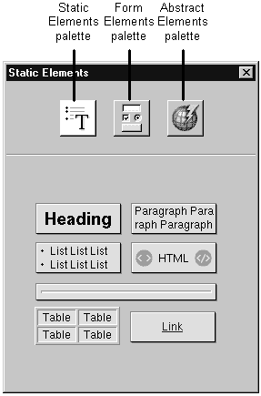

A palette is a collection of static or dynamic HTML elements. You use the palette to
add elements to a page.
To open the palette window, choose Tools->Palettes->Palettes or click the palette
button on the component window.
The palette window holds all currently loaded palettes. You select a particular palette by clicking its icon at the top of the palette window.

- Static Elements palette displays static HTML elements.
- Form Elements palette displays form-based dynamic elements.
- Abstract Elements palette displays dynamic elements that have no direct HTML
equivalent. These elements are often not "visible" when you are constructing the
page in the way that the form-based elements are visible. They are replaced
with text and graphics by your application at run time.
The three palettes listed above are standard palettes and are always displayed. You
can create your own palettes and you can load palettes created by someone else.
See "Creating a Palette" and "Loading and Unloading Palettes" for more information.
|  Table of Contents
Table of Contents
 Previous Section
Previous Section
 Next Section
Next Section